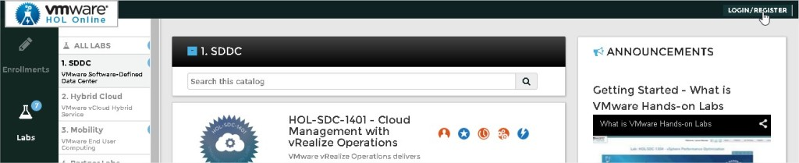
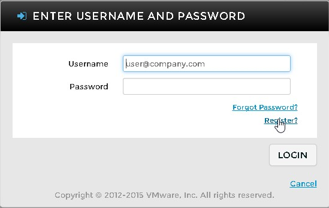
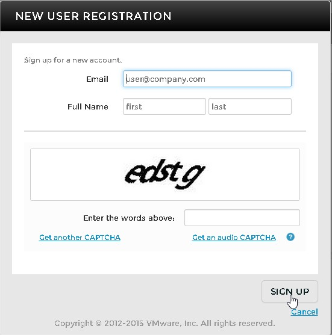
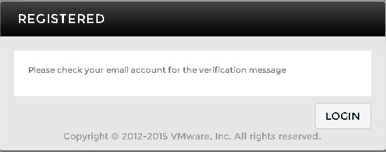
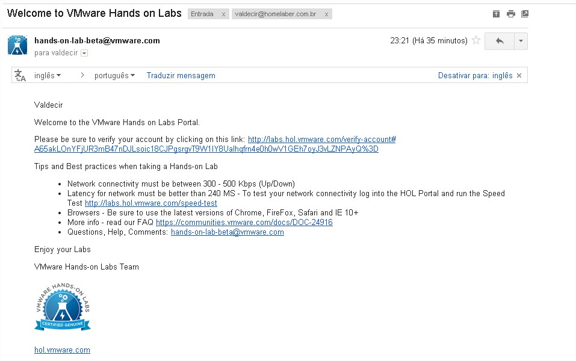
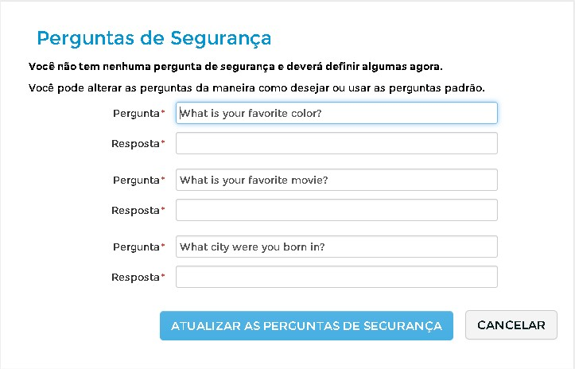
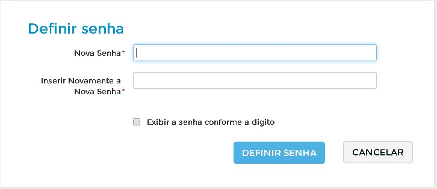
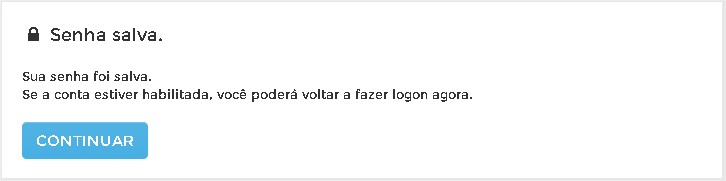
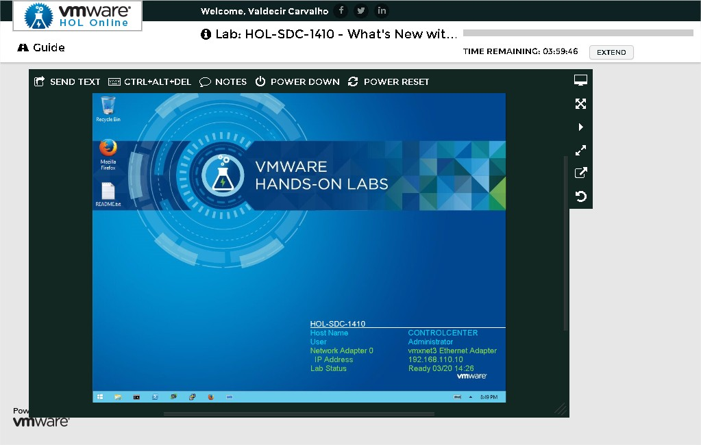
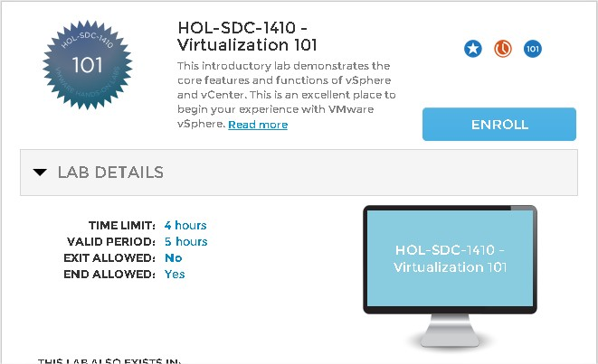

Lab VMware Grátis - VMware HOL - Hands On Lab
VMwareCompartilhe esse post nas redes sociais...
[caption id="attachment_154” align="aligncenter” width="300”] VMware Hands-On Lab[/caption]
VMware Hands-On Lab[/caption]
Olá HomeLabers!
(Leia com voz de locutor do comercial da TekPix)
Brincadeiras a parte, o VMware HOL é uma EXCELENTE ferramenta para você tomar conhecimento dos produtos da VMware e sem custo.
O catálogo de cursos é bastante extenso e constantemente atualizado. O único inconveniente é que todo o material está em Inglês. Existem cursos do nível básico ao avançado.
Costumo utilizar o HOL para olhar alguma ferramenta que não tenho como instalar em meu HomeLab, como o VMware NSX por exemplo.
Como ter acesso ao HOL?
- Sua conexão de internet deve ter no mínimo 1Mbps
- A latência de rede deve ser melhor que 240 MS - Para testar sua conectividade da sua internet para o Portal HOL existe um teste de velocidade em http://labs.hol.vmware.com/speed-test
- Certifique-se de usar as versões mais recentes do Chrome, Firefox, Safari ou IE 10+
- Mais informações, acesse o FAQ https://communities.vmware.com/docs/DOC-24916
Acesse o site http://labs.hol.vmware.com/HOL/catalogs/
Clique em Login/Register

Clique em Register

Preencha seus dados e clique em SIGN UP

Verifique seu e-mail e siga as instruções (costuma demorar um pouco!).


Verifique sua conta clicando no link do email que você recebeu.
Defina suas perguntas secretas

Defina sua senha

Clique em continuar

Escolha seu laboratório e começe seus estudos :D

Este video explica o que é o VMware Hand-on Labs.
[embed]https://youtu.be/OxWt6qY3td8[/embed]
Uma dica para se manter informado sobre as ultimas novidades sobre o VMware HOL é seguir o Twitter: @VMwareHOL e acompanhar o Blog do HOL: http://blogs.vmware.com/hol/
Se você é novo no mundo VMware eu sugiro que você começe pelo laboratório HOL-SDC-1410 - Virtualization 101. Este laboratório introdutório demonstra os principais recursos e funções do vSphere e do vCenter.

É isso Homelabers! Fico por aqui e espero que vocês tenham gostado. Até o próximo post e não se esqueça de deixar o seu comentário no post, seguir o HomeLaber no Twitter (@Homelaber) e curtir a nossa página no Facebook (fb.com/homelaber) para ficar sempre atualizado das novidade do blog.
Compartilhe esse post nas redes sociais...Valdecir Carvalho
Nerd e pai orgulhoso da Mariana e João. Profissional Sênior de TI com foco em arquitetura de infraestrutura e cloud computing. Blogueiro, podcaster, palestrante, amante de comunidades técnicas, fotógrafo aposentado e adora jogos antigos.
#vExpert · #VMUGLeader · #VUGBrasil · #vBronwBagBrasil · #VeeamVanguard